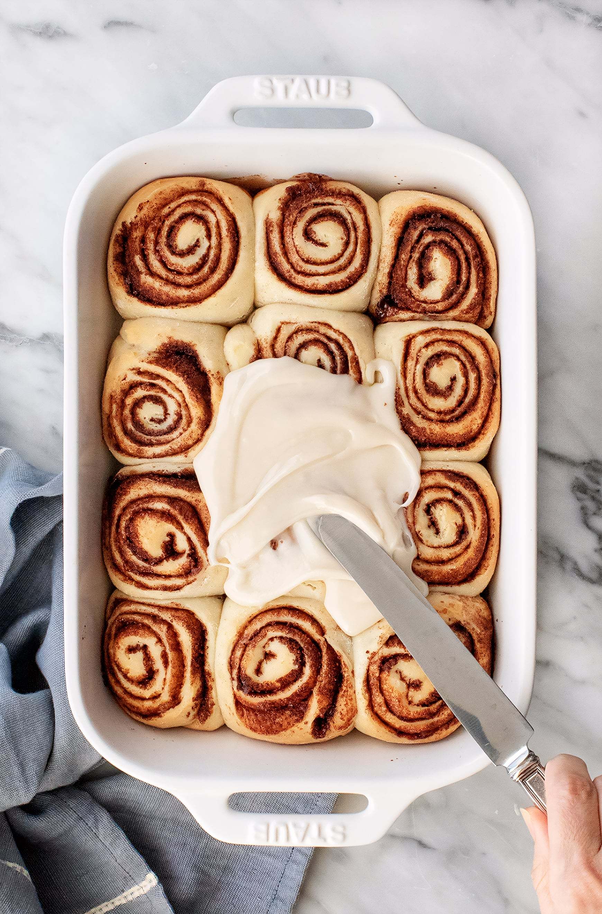
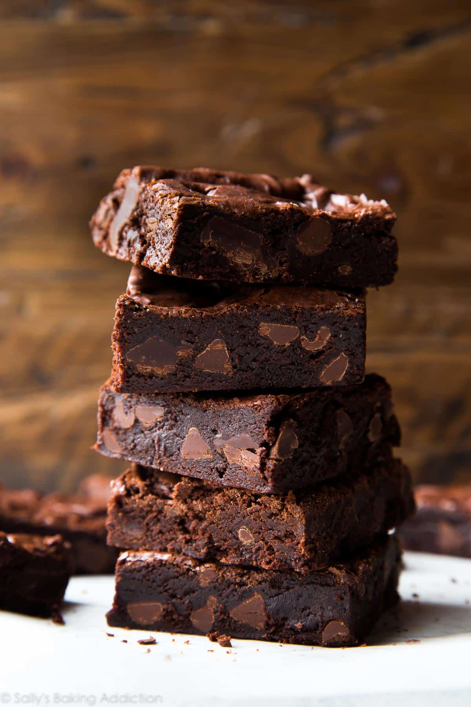
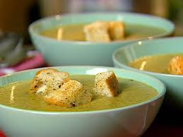
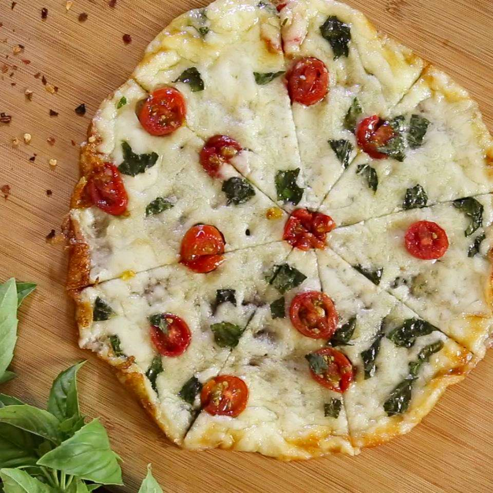

This page is to note my baking and cooking journey, and detail what i should change
Websites that have cooking or baking recipes that are goated
Love & Lemons
Sally's Baking Addiction
Zoe Bakes
Food Network
All Recipes
Cinnamon Rolls - Love and Lemons
result
Seriously Fudgy Homemade Brownies - Sally's Baking
result
Broccoli Soup - Food Network
result
Cheesy-Crust Skillet Pizza - All Recipes
result